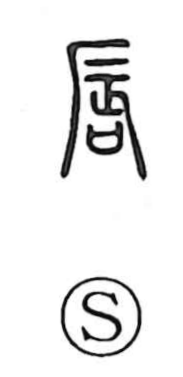

唇

Kun: kuchibiru | On: shin
lips
Explanation
A phono-semantic character: the phonetic is 辰 (read shin), which was originally the graph later used as 蜃, depicting a clam-like creature with its limbs thrust out, suggestive of a piece of flesh in motion. To this is added the “sai,” a ritual receptacle for depositing written prayers to the deities, pointing to the act of divination. By analogy with the older body-part form 脣, which employs the flesh radical 月, this graph came to be used for kuchibiru, the lips.